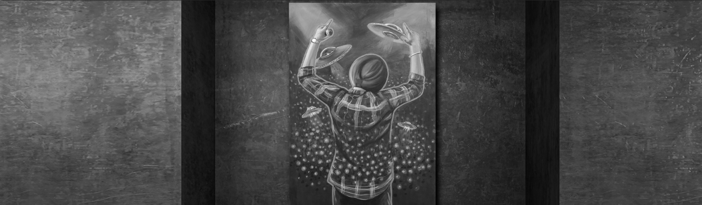

Ho Duniya Tu Dekhi Othe Karu Sajjde, Jithe Jithe Paine Billo Pair Jatt De
Waddeyan Gharaneya Naal Peeth Jood Di, Wadde Wadde Bandeyan Naal Vair Jatt De
Ho Dass Khabbi Khan Kithe Sadde Match Da, Malwa Doaba Ki Ae Majha Mithiye
Ho Moddeyan De Kaal Jihde Paunda Boliyan, Biba Yalgaar Jihdi Shehri Bandi
Ho Ginti De Din Oh Jeonde Jag Te, Ant Nu Tarakki Jihdi Vairi Bandi
Ho Mard Mashookan Wangu Maut Udeekda, Khaure Kadon Khadkau Darwaja Mithiye
Ho Zindagi Da Jungnama Phire Likhda, Badeyan Ne Sahiba Atte Heera Likhiya
Jitti Ni Taseer Kithe Mull Nakhron, Ant Nu Tu Dekh Tasveeran Vikkiyan
Ho Moose Wala Jeonda Hi Amar Ho Gaya, Bahut Aaiyan Jag Te Awajan Mithiye
'The Last Ride' is dedicated to Sidhu Moosewala. The artwork is Acrylic on Canvas with
a touch of Fluorescent, Neon Colours. It portrays the light coming from Flying soccers
and galaxy at his concert ground. The vibrant colours on canvas beautifully blend with
the persona of Sidhu Moosewala. The size of this artwork is 36x56 Inch. The name is
taken from his own song "The Last Ride”. As the song mentions the line- 'Ho Moosewala
Jeonda Hi Amar Ho Gaya', this painting reminds that he is forever in our heart.
